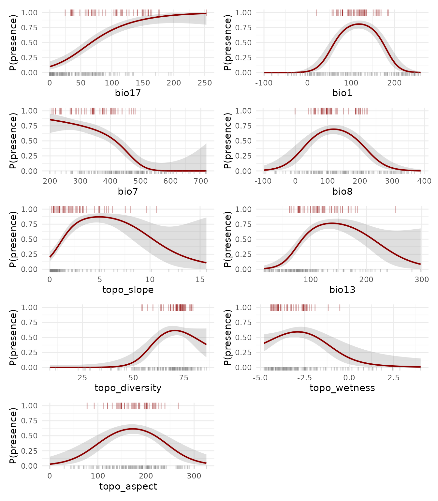
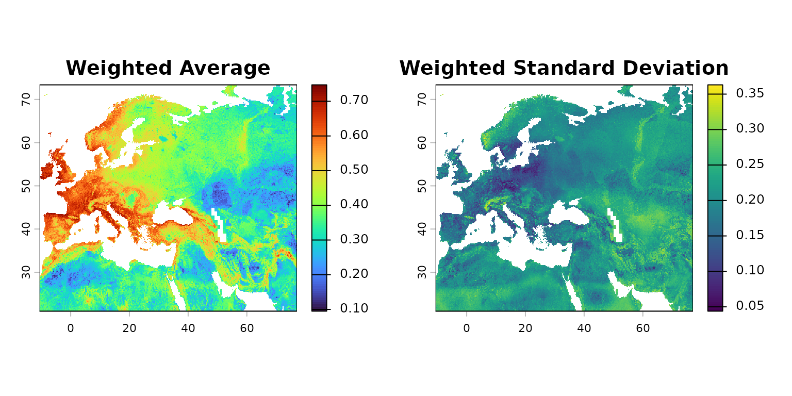
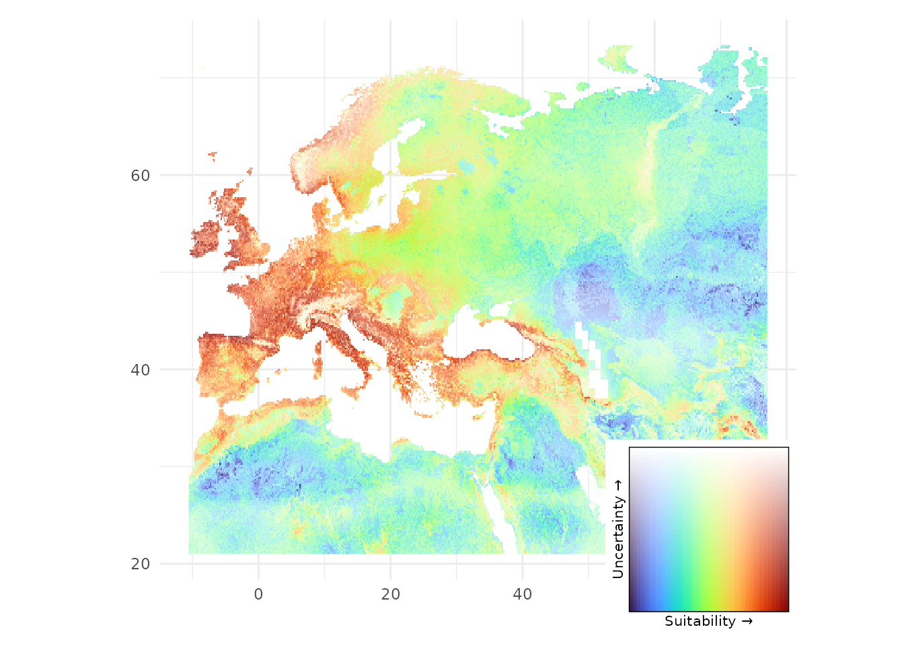

neanderthal
neanderthal.RmdOverview
The neanderthal dataset contains presence and
pseudo-absence records of Neanderthal archaeological sites from Marine
Isotope Stage 5e (Last Interglacial, ~130,000-115,000 years ago),
combined with 25 paleoclimate and topographic predictor variables. This
dataset was sourced from Benito et al. (2017) and
built to support binary classification, species distribution modelling,
and habitat suitability analysis.
Data Structure
The dataset is an sf data frame with 227 rows and 27
columns, and no missing data.
dplyr::glimpse(neanderthal)
#> Rows: 227
#> Columns: 27
#> $ presence <int> 1, 1, 1, 1, 1, 1, 1, 1, 1, 1, 1, 1, 1, 1, 1, 1, 1…
#> $ bio1 <dbl> 93.90861, 101.39613, 98.43701, 80.31912, 67.72340…
#> $ bio10 <dbl> 230.8535, 193.2386, 196.0572, 208.2075, 193.7100,…
#> $ bio11 <dbl> -40.628402, 19.409437, 7.986982, -47.536219, -58.…
#> $ bio12 <dbl> 1016.7842, 634.9449, 651.3601, 481.9939, 598.3581…
#> $ bio13 <dbl> 124.79270, 86.20893, 78.12757, 64.77663, 79.24467…
#> $ bio14 <dbl> 42.9601370, 20.1204209, 23.6468781, 17.5191646, 2…
#> $ bio15 <dbl> 28.78959, 34.29474, 27.51153, 40.68027, 36.12821,…
#> $ bio16 <dbl> 321.4307, 235.2489, 220.1406, 189.4942, 228.7584,…
#> $ bio17 <dbl> 141.42826, 103.49764, 107.45727, 59.94072, 84.456…
#> $ bio18 <dbl> 306.99387, 125.23646, 155.59023, 179.19781, 213.6…
#> $ bio19 <dbl> 174.55667, 150.36287, 140.85947, 60.03907, 84.465…
#> $ bio2 <dbl> 107.35804, 80.55478, 86.42271, 101.75828, 100.366…
#> $ bio3 <dbl> 24.97327, 29.14201, 29.00000, 24.82866, 24.62171,…
#> $ bio4 <dbl> 10434.941, 6795.361, 7319.844, 9877.545, 9766.644…
#> $ bio5 <dbl> 315.4290, 259.6066, 268.1590, 290.8134, 275.5202,…
#> $ bio6 <dbl> -109.914922, -12.303463, -26.610513, -115.376691,…
#> $ bio7 <dbl> 425.3439, 271.9101, 294.7695, 406.1901, 401.8273,…
#> $ bio8 <dbl> 219.387741, 95.264316, 89.376189, 200.248222, 186…
#> $ bio9 <dbl> -23.84609, 52.21129, 49.78763, -41.15274, -58.285…
#> $ topo_aspect <dbl> 203.37818, 149.00686, 169.84060, 142.45523, 149.4…
#> $ topo_diversity_local <dbl> 7.1118334, 6.2437519, 1.2860197, -3.1426907, -0.7…
#> $ topo_diversity <dbl> 78.13295, 74.73658, 73.03239, 67.50587, 71.77473,…
#> $ topo_elev <dbl> 240.97322, 62.10563, 32.56124, 110.95158, 348.351…
#> $ topo_slope <dbl> 2.0600362, 0.9570366, 0.3261872, 1.3632851, 1.354…
#> $ topo_wetness <dbl> -3.142004, -3.236383, -1.925804, -3.006190, -4.24…
#> $ geometry <POINT [°]> POINT (15.8632 46.1654), POINT (1.8785 50.1…The response is presence (see
neanderthal_response), a integer binary variable indicating
Neanderthal presence (1) or pseudo-absence (0):
table(neanderthal$presence)
#>
#> 0 1
#> 178 49
mapview::mapview(
neanderthal |>
dplyr::mutate(
presence = as.factor(presence)
),
zcol = "presence",
layer.name = "Presence",
col.regions = c("gray50", "red4")
)The dataset includes 25 palaeoclimatic (last interglacial) and topographic predictors.
neanderthal_predictors
#> [1] "bio1" "bio10" "bio11"
#> [4] "bio12" "bio13" "bio14"
#> [7] "bio15" "bio16" "bio17"
#> [10] "bio18" "bio19" "bio2"
#> [13] "bio3" "bio4" "bio5"
#> [16] "bio6" "bio7" "bio8"
#> [19] "bio9" "topo_aspect" "topo_diversity_local"
#> [22] "topo_diversity" "topo_elev" "topo_slope"
#> [25] "topo_wetness"The palaeoclimatic predictors are described here.
Example Usage
This example shows how to use neanderthal model
Neanderthal habitat suitability during the Last Interglacial using GAM
models. It is divided in the following sections:
- Multicollinearity Filtering: selects non-collinear predictors.
- Modelling Rationale: explains the modelling choices.
- Model Fitting: fits an ensemble of univariate GAM models and plots the response curves.
- Model Evaluation: computes partial AUC scores for the univariate models and a global AUC score for the weighted ensemble.
- Habitat Suitability Map: predicts the ensemble over raster predictors to build the target map.
Multicollinearity Filtering
The function collinear::collinear()
selects a non-redundant subset of the most relevant predictors. The
function ranks all predictors by the AUC of univariate binomial GAM
models with case weights, and then applies a multicollinearity filtering
that preserves the most important ones.
selection <- collinear::collinear(
df = neanderthal,
responses = neanderthal_response,
predictors = neanderthal_predictors,
f = collinear::f_binomial_gam,
quiet = TRUE
)The ranking of predictors computed by
colliinear::collinear() for this dataset is shown below.
The column score shows the AUC score of each univariate
model.
The function has selected the following predictors:
selection$presence$selection
#> [1] "bio17" "bio1" "bio7" "bio8"
#> [5] "topo_slope" "bio13" "topo_diversity" "topo_wetness"
#> [9] "topo_aspect"
#> attr(,"validated")
#> [1] TRUEModelling Rationale
In this section we fit a weighted ensemble of quasibinomial GAM models with case weights. Let’s unpack all that!
Case weights: The neanderthal dataframe
has 49 and 178 absences, an imbalance that might result in an
overprediction of zeros. To mitigate this issue, the function collinear::case_weights()
generates inverse-frequency weights so that both classes contribute
equally to the model fit.
sample_weights <- collinear::case_weights(x = neanderthal$presence)
table(sample_weights)
#> sample_weights
#> 0.00280898876404494 0.0102040816326531
#> 178 49Quasibinomial GAM: GAM models replace the linear
terms used in GLMs with smoothing splines (s()) that better
represent non-linear relationships between presence and environment. We
use the quasibinomial family because it accounts for the
overdispersion introduced by pseudo-absence data and case weights. The
basis dimension is set to k = floor(n_presences/4) to
capture the unimodal or monotonic responses expected from niche theory
while keeping each smooth well within the budget allowed by the number
of presences. Combined with REML = TRUE and
select = TRUE, the actual complexity is penalized further,
and uninformative terms can be shrunk to zero.
Weighted Ensemble: The neanderthal data
has 49 presences. Fitting a model with all predictors at once might lead
to overparameterization and overfitting. To avoid this potential issue,
we will fit univariate GAM models between presence and each
environmental predictor, and then ensemble their
predictions via weighted average, using the models’ AUC scores as
weights.
Model Fitting
The code below fits the ensemble of univariate GAM models.
models <- lapply(
X = selection$presence$selection,
FUN = function(x){
mgcv::gam(
formula = as.formula(
paste0(
"presence ~ s(",
x, ",
k = ",
floor(sum(neanderthal$presence)/10),
")"
)
),
data = sf::st_drop_geometry(neanderthal),
family = stats::quasibinomial(link = "logit"),
weights = sample_weights,
REML = TRUE,
select = TRUE
)
}
)
names(models) <- selection$presence$selectionThe following plots show the predicted probability of Neanderthal presence for each univariate GAM model. Rug marks along the x-axis indicate observed data values.
response_plots <- lapply(names(models), function(var) {
#extract individual univariate model
model <- models[[var]]
df <- sf::st_drop_geometry(neanderthal)
#prediction grid
newdata <- data.frame(
x = seq(
from = min(df[[var]]),
to = max(df[[var]]),
length.out = 200)
)
names(newdata) <- var
#predict on link scale with standard errors
pred <- predict(
object = model,
newdata = newdata,
type = "link",
se.fit = TRUE
)
#back-transform to probability scale with 95% CI
newdata$fit <- stats::plogis(pred$fit)
newdata$lower <- stats::plogis(pred$fit - 1.96 * pred$se.fit)
newdata$upper <- stats::plogis(pred$fit + 1.96 * pred$se.fit)
#plot response curve
ggplot(newdata, aes(x = .data[[var]])) +
geom_ribbon(
aes(ymin = lower, ymax = upper),
fill = "gray50",
alpha = 0.25
) +
geom_line(
aes(y = fit),
color = "red4",
linewidth = 0.8
) +
geom_rug(
data = df[df$presence == 1, ],
aes(x = .data[[var]]),
sides = "t",
color = "red4",
alpha = 0.3,
length = unit(0.1, "npc")
) +
geom_rug(
data = df[df$presence == 0, ],
aes(x = .data[[var]]),
sides = "b",
color = "gray50",
alpha = 0.3,
length = unit(0.05, "npc")
) +
scale_y_continuous(limits = c(0, 1)) +
labs(x = var, y = "P(presence)") +
theme_minimal(base_size = 11)
})
patchwork::wrap_plots(response_plots, ncol = 2)
Model Evaluation
In this section we compute the partial AUC scores of each univariate model, and the global AUC of the ensemble. A more honest cross-validation evaluation would work better here, but it is left out for simplicity.
The partial AUC scores will be used as weights when building the ensemble. Here these scores are computed via collinear::score_auc(), but any other function able to compute AUC will do here.
model_weights <- lapply(
X = models,
FUN = function(x){
collinear::score_auc(
o = neanderthal[["presence"]],
p = stats::predict(x, type = "response")
)
}
) |>
unlist()
names(model_weights) <- selection$presence$selectionTo compute the intrinsic AUC of the model, we first generate the predictions of the univariate GAM models, and then average these predictions weighted by their partial AUC scores, and finally compare them with the observations.
#extract predictions from each model
predictions <- sapply(
X = models,
FUN = function(x) {
stats::predict(x, type = "response")
}
)
#compute weighted average predictions
weighted_predictions <- apply(
X = predictions,
MARGIN = 1,
FUN = stats::weighted.mean,
w = model_weights
)
#compute ensemble AUC
auc <- collinear::score_auc(
o = neanderthal[["presence"]],
p = weighted_predictions
)
auc
#> [1] 0.923756The global AUC score indicates the probability of any presence to have a higher habitat suitability than any pseudoabsence.
Habitat Suitability Map
The package spatialData provides the raster dataset
neanderthal_env to predict models based on the
neanderthal data.
neanderthal_env <- spatialData::neanderthal_extra()
class(neanderthal_env)
#> [1] "SpatRaster"
#> attr(,"package")
#> [1] "terra"
names(neanderthal_env)
#> [1] "bio1" "bio10" "bio11"
#> [4] "bio12" "bio13" "bio14"
#> [7] "bio15" "bio16" "bio17"
#> [10] "bio18" "bio19" "bio2"
#> [13] "bio3" "bio4" "bio5"
#> [16] "bio6" "bio7" "bio8"
#> [19] "bio9" "topo_aspect" "topo_diversity_local"
#> [22] "topo_diversity" "topo_elev" "topo_slope"
#> [25] "topo_wetness"The code below predicts the univariate GAMs over
neanderthal_env, and then computes their weighted mean to
produce the habitat suitability map.
#predict each model on a separate raster object
univariate_predictions <- lapply(
X = names(models),
FUN = function(x) {
terra::predict(
object = neanderthal_env,
model = models[[x]],
type = "response",
na.rm = TRUE
)
}
) |>
terra::rast()
#compute weighted mean of individual predictions
ensemble_average <- terra::weighted.mean(
x = univariate_predictions,
w = model_weights
)
#weighted standard deviation of the ensemble
ensemble_deviation <- terra::app(
x = univariate_predictions,
fun = function(x) {
sqrt(sum(model_weights * (x - weighted.mean(x, model_weights))^2) / sum(model_weights))
}
)
#plot suitability map
par(mfrow = c(1, 2))
plot(
x = ensemble_average,
col = viridis::turbo(n = 100),
main = "Weighted Average"
)
plot(
x = ensemble_deviation,
main = "Weighted Standard Deviation"
)
Finally, we combine both maps into a single visualization using a whitening approach: the suitability color scale is progressively bleached toward white as uncertainty increases. Vivid colors indicate confident predictions, while pale or white areas flag regions where models disagree.
#combine into a data frame
bi_df <- terra::as.data.frame(
x = c(ensemble_average, ensemble_deviation),
xy = TRUE
)
names(bi_df)[3:4] <- c("suitability", "uncertainty")
#normalize both variables to [0, 1]
bi_df$suit_norm <- (bi_df$suitability - min(bi_df$suitability)) /
(max(bi_df$suitability) - min(bi_df$suitability))
bi_df$unc_norm <- (bi_df$uncertainty - min(bi_df$uncertainty)) /
(max(bi_df$uncertainty) - min(bi_df$uncertainty))
#map suitability to turbo colors
turbo_palette <- viridis::turbo(100)
base_colors <- col2rgb(
turbo_palette[ceiling(bi_df$suit_norm * 99) + 1]
) / 255
#blend toward white based on uncertainty
r <- base_colors["red", ] * (1 - bi_df$unc_norm) + bi_df$unc_norm
g <- base_colors["green", ] * (1 - bi_df$unc_norm) + bi_df$unc_norm
b <- base_colors["blue", ] * (1 - bi_df$unc_norm) + bi_df$unc_norm
bi_df$fill_color <- rgb(r, g, b)
#build map
bi_map <- ggplot2::ggplot(
data = bi_df,
mapping = ggplot2::aes(x = x, y = y, fill = fill_color)
) +
ggplot2::geom_raster() +
ggplot2::scale_fill_identity() +
ggplot2::coord_quickmap() +
ggplot2::theme_minimal() +
ggplot2::labs(x = "", y = "")
#build whitening legend
n <- 100
legend_df <- expand.grid(
suitability = seq(0, 1, length.out = n),
uncertainty = seq(0, 1, length.out = n)
)
leg_colors <- col2rgb(
turbo_palette[ceiling(legend_df$suitability * 99) + 1]
) / 255
legend_df$fill <- rgb(
leg_colors["red", ] * (1 - legend_df$uncertainty) + legend_df$uncertainty,
leg_colors["green", ] * (1 - legend_df$uncertainty) + legend_df$uncertainty,
leg_colors["blue", ] * (1 - legend_df$uncertainty) + legend_df$uncertainty
)
bi_legend <- ggplot2::ggplot(
data = legend_df,
mapping = ggplot2::aes(
x = suitability,
y = uncertainty,
fill = fill
)
) +
ggplot2::geom_raster() +
ggplot2::scale_fill_identity() +
ggplot2::scale_x_continuous(expand = c(0, 0)) +
ggplot2::scale_y_continuous(expand = c(0, 0)) +
ggplot2::labs(
x = "Suitability \u2192",
y = "Uncertainty \u2192"
) +
ggplot2::theme_minimal(base_size = 8) +
ggplot2::theme(
axis.text = ggplot2::element_blank(),
axis.ticks = ggplot2::element_blank(),
panel.grid = ggplot2::element_blank(),
panel.border = ggplot2::element_rect(fill = NA, color = "black", linewidth = 0.5)
)
#compose map and legend
bi_map + patchwork::inset_element(
p = bi_legend,
left = 0.70,
bottom = -0.1,
right = 1,
top = 0.25
)
The map suggests that during the Last Interglacial, the most suitable Neanderthal habitat was concentrated in southern Europe and parts of the Near East, with model confidence decreasing toward range margins and data-sparse regions.